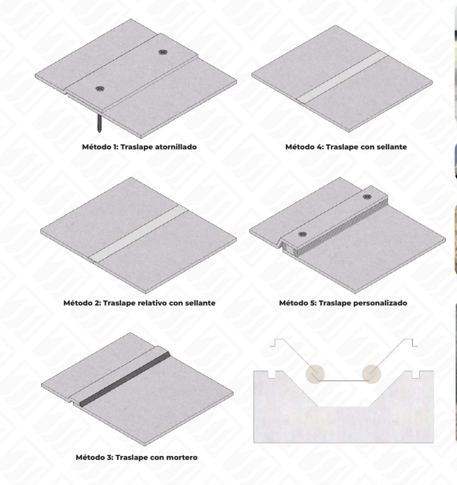

Fibra permeable e hidratable
Permite el paso del agua para activar el hormigón y adherirse al terreno.

Geocompuesto de hormigón flexible de tres capas: alta resistencia, durabilidad y versatilidad para obras hidráulicas y protección de taludes.
Concrete Blanket es un material innovador en la ingeniería civil, diseñado para aplicaciones de infraestructura en una variedad de sectores. Su estructura de tres capas le otorga propiedades mecánicas superiores, como resistencia al desgaste y flexibilidad para adaptarse a distintas superficies.
Su uso se extiende a proyectos donde es fundamental evitar la filtración de agua, proteger superficies erosionables como taludes o riberas, y crear revestimientos rápidos en situaciones de emergencia.

Cada capa cumple una función específica para lograr un revestimiento resistente e impermeable.

Permite el paso del agua para activar el hormigón y adherirse al terreno.
Otorga la resistencia estructural y la flexibilidad del material.
Actúa como barrera impermeable. Sus bordes pueden personalizarse.
Concrete Blanket ha sido sometido a ensayos estandarizados para la medición de sus capacidades estructurales.
| Resistencia a la flexión (MPa) | Resistencia a la compresión (MPa) | |||
|---|---|---|---|---|
| Exigencia normativa (Tipo II) | Muestra manta (longitudinal) | Muestra manta (transversal) | Exigencia normativa (Tipo II) | Muestra manta |
| 4,0 | 21,0 | 17,3 | 50,0 - 59,9 | 51,2 |
Especificación estándar para manta compuesta cementicia geosintética (GCCM).
Ensayo de flexión en tres puntos, con hidratación de 24 horas.
Determinación de la resistencia a la compresión del material cementicio.
La versatilidad y fácil manejo de Concrete Blanket permite diversos métodos de traslape según las necesidades de cada proyecto.

Te ayudamos a definir la mejor solución para tu proyecto con Concrete Blanket.